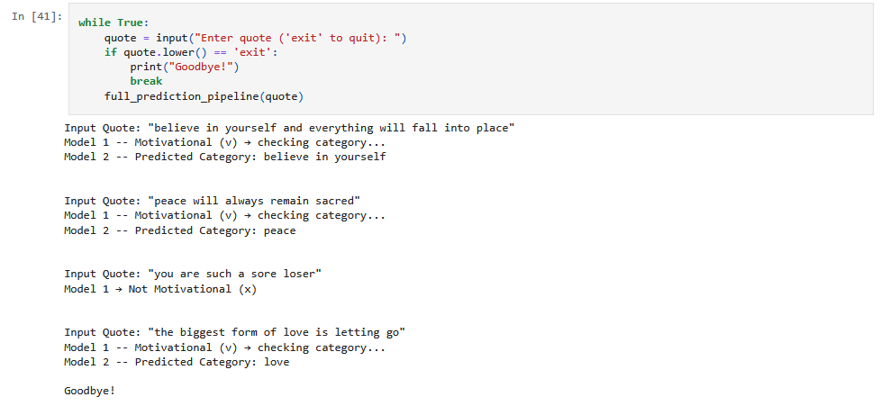

Motivational Quote Analysis
Exploring the intersection of text classification and positive psychology by building models that detect and categorize motivational quotes.
View on GitHubProject Goal
The goal of this project is to analyze text data and determine whether a sentence is a motivational quote. If it is, the model further classifies it into specific motivational themes such as resilience, perseverance, growth, or positivity.
The Brief & Challenge
Inspirational and motivational content is everywhere online, but automatically detecting and categorizing it requires more than just keyword matching. Quotes often carry nuanced meaning, and models must capture context to avoid misclassification.
The challenge was to design a system that not only identifies motivational text but also groups it into meaningful categories that align with common motivational themes.
Process & Outcome
The project used a two-model pipeline: the first model detects whether the input is a motivational quote or not, and the second model classifies motivational quotes into predefined categories.
Both models were trained using labeled datasets, pre-trained embeddings, and standard evaluation metrics like accuracy, precision, recall, and F1-score. Through this process, I gained deeper experience in text classification workflows and model evaluation in NLP.
Not all text is motivational, but when it is—this model makes sure the message is recognized and categorized.
Sample Workflow
Below is a simplified diagram of how the two-model pipeline processes input and output text. The full training notebooks and evaluation reports are available on GitHub.
 View Full Project on GitHub